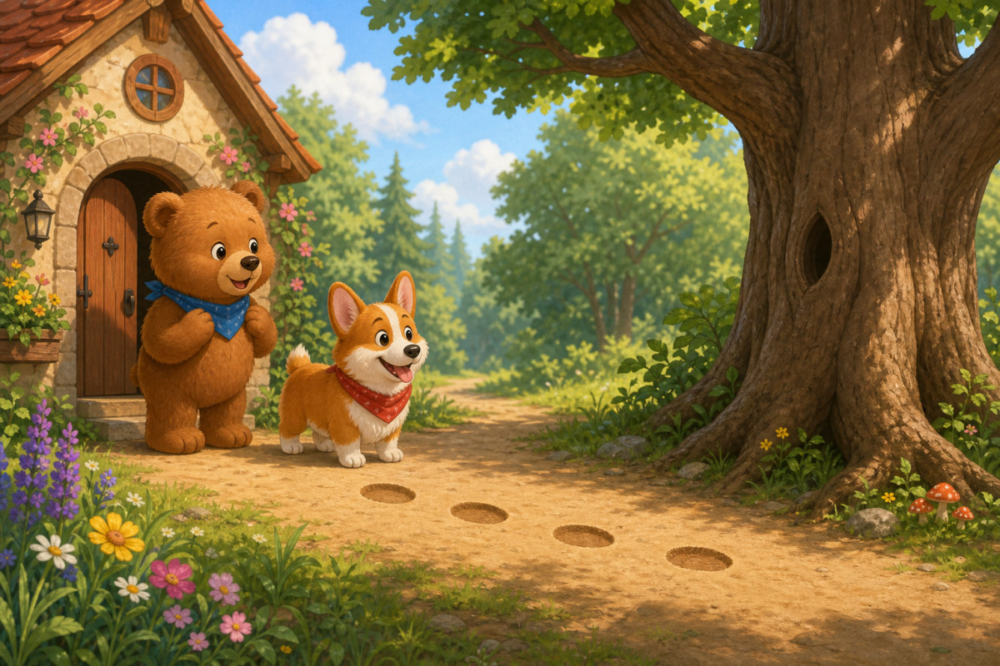
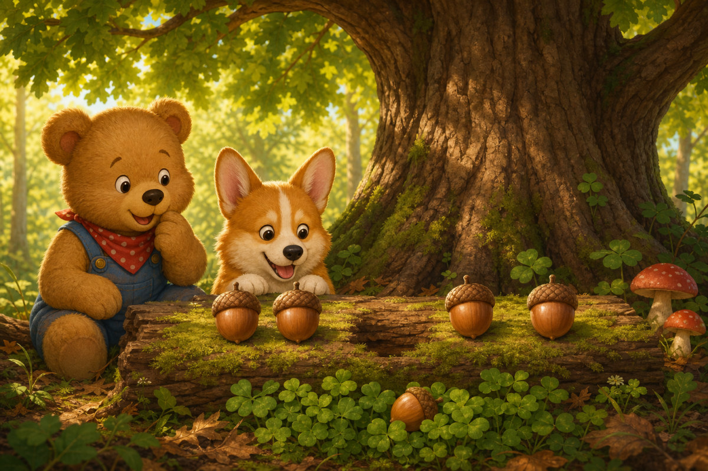
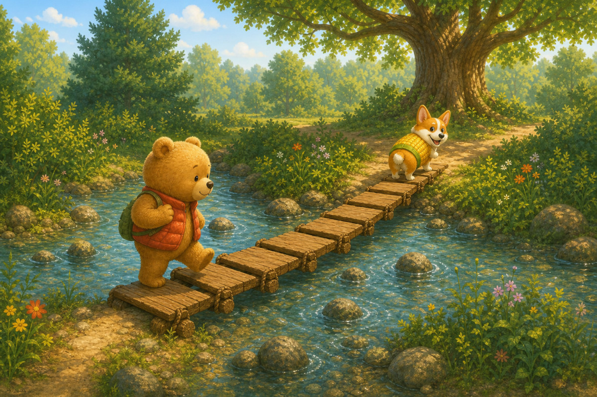
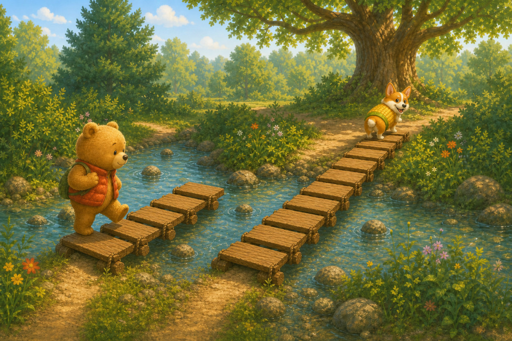
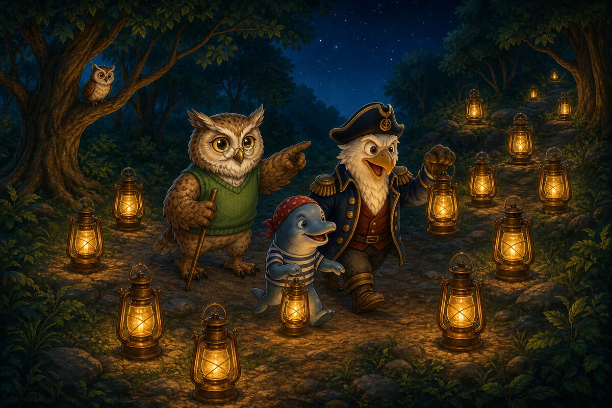

Ted‑E‑Bear taps his vest before every adventure. Tap-tap means, “I can try.” But this morning his paw finds an empty spot. His lucky button is gone. Corgi-on-the-Cob sniffs the curling threads, then sneezes a tiny pop of corn. The first clues are waiting beside Ted’s bed.

Page 2 of 6 · Count 4
Outside, fresh paw marks cross the path. Ted’s tummy feels fluttery. What if the trail is too long? Corgi presses his nose to the first print and gives a hopeful bark-pop. Ted takes one careful step, then another. Trying feels a little like courage.

Page 3 of 6 · Find the sequence
Beneath the oak, numbered acorns sit in a neat row. One has rolled into the clover, leaving a gap. Corgi wants to chase it, but Ted studies the caps. “Wait,” he says. “The row is trying to tell us something.”

Page 4 of 6 · Compare
A little bridge stretches over the creek. One side has a short line of stepping planks; the other has a longer line. Ted does not like wobbling. Corgi trots onto the side with more places to step, then turns and waits. Ted touches the empty spot on his vest. “I can still try.”

Page 5 of 6 · Count 9
On the hill, picnic napkins flap in the breeze. Something gold flashes beneath them, then disappears. Corgi’s tail starts popping so quickly that Ted laughs. Together they lift each napkin while the warm smell of honey-oat buns drifts from the basket.

Page 6 of 6 · Make 10
The button was holding down the picnic cloth all along. Ted sews it back onto his vest, then pauses. He crossed the path, solved the acorns, and braved the bridge without it. Corgi leans close. Tap-tap. “Lucky button,” says Ted, “meet my brave paws.”
The end · Adventure complete
Was the button Ted’s only kind of luck?
Talk about the answer
Ted discovered that his own brave paws—and a patient friend—helped him finish the trail.
SnackPack 123 Counting continues with more interactive number stories, counting activities, comparisons, ten-frames and number-line adventures.